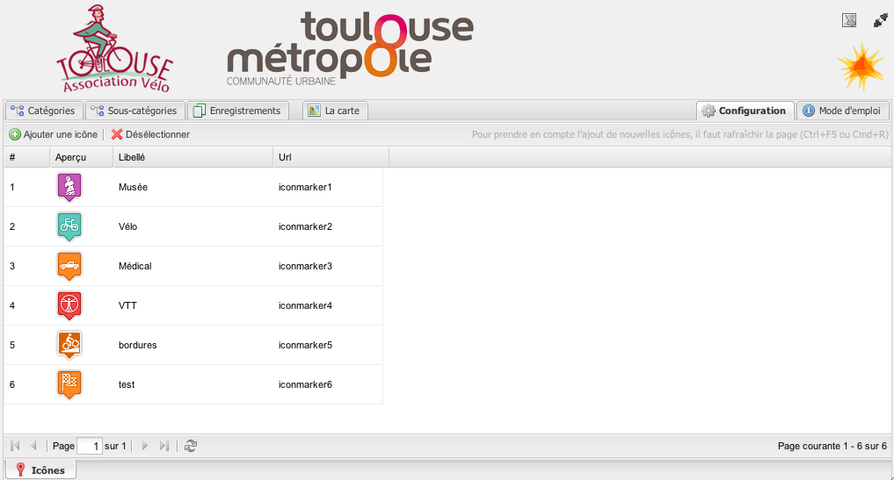
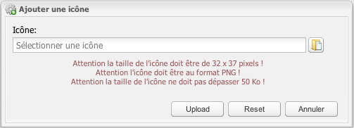

L'onglet de configuration
Dans l'onglet configuration il est possible d'ajouter des icônes :

### Un clic sur l'icône d'ajout ouvre une boîte de dialogue :

### Après une édition, il est nécessaire de rafraîchir le cache du navigateur (Ctrl ou Commande + R) pour prendre en compte les modifications dans les onglets Catégories et Sous-catégories.